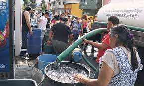
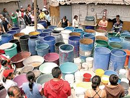
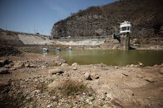
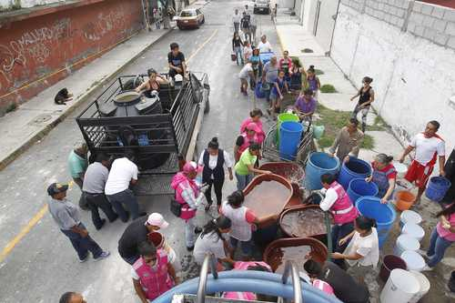
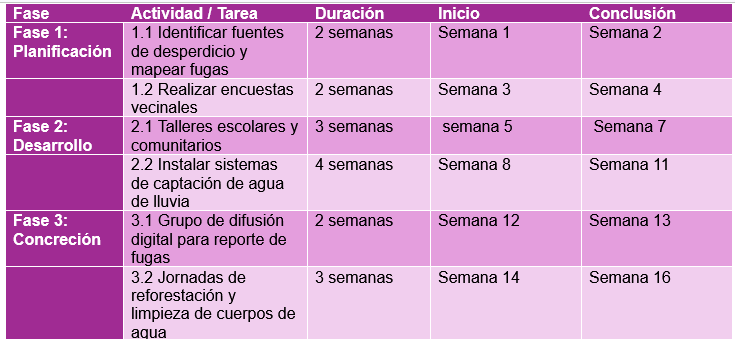
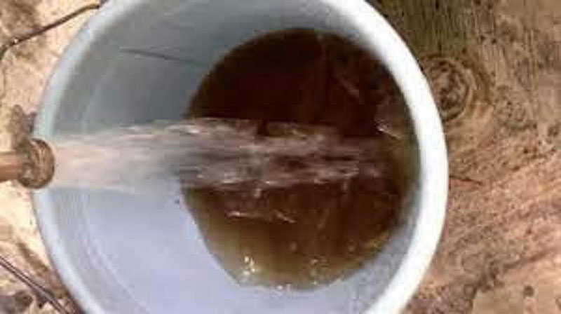
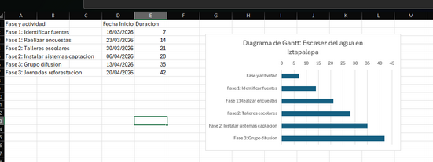
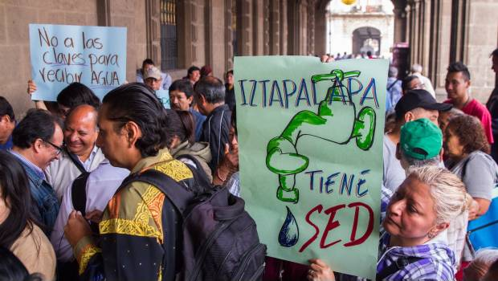

La escasez del agua en Iztapalapa

El tema de mi proyecto es la escasez de agua en la alcaldía Iztapalapa. Este
tema es de suma relevancia ya que la falta del recurso afecta gravemente la
salud pública, genera conflictos sociales y provoca la pérdida de
biodiversidad y cosechas en la zona. El propósito principal es promover el uso
responsable y la gestión adecuada del agua para reducir su carencia y mejorar
la calidad de vida de los habitantes. Pretendo llevarlo a cabo mediante una
estrategia que combina campañas de concientización, la instalación de
sistemas de captación de agua de lluvia y el fomento del reuso de aguas
grises. Las personas que me ayudarán a ejecutarlo incluyen a vecinos
voluntarios, líderes comunitarios, estudiantes, profesores y técnicos
especializados en instalaciones hídricas. La importancia de este proyecto en
el contexto de mi comunidad local es crítica, ya que busca fortalecer la
resiliencia ciudadana ante la crisis hídrica actual de la Ciudad de México y
asegurar un futuro más sostenible para las miles de familias afectadas en la
alcaldía.

Objetivo General
El objetivo que nos hemos trazado es ambicioso pero posible: implementar un programa integral de cultura del agua en la colonia Buenavista durante este 2026. Queremos que, a través de talleres prácticos y la instalación de sistemas de cosecha de lluvia, logremos reducir la dependencia de la red externa. No se trata solo de ahorrar, sino de aprender a recolectar lo que el cielo nos da y a darle un segundo uso a lo que ya tenemos. Mi meta es que, para finales de año, al menos 30 hogares de mi zona cuenten con sistemas funcionales que les den autonomía ídrica.
Ámbito Social
Analizando el ámbito social, este proyecto es trascendente porque la escasez de agua profundiza la desigualdad. En Iztapalapa, el tiempo que invertimos esperando el tandeo o el dinero que gastamos en garrafones es tiempo y recursos que le quitamos a nuestra educación y a nuestras familias. Al organizarnos como vecinos para captar agua y vigilar las fugas, no solo solucionamos un problema técnico; estamos tejiendo una red de apoyo comunitario. La unión vecinal es la herramienta más fuerte que tenemos para exigir nuestros derechos y mejorar nuestra calidad de vida.
Ámbito Ambiental
Desde la perspectiva ambiental, la situación es crítica. La sobreexplotación de los mantos acuíferos está provocando que nuestra tierra se hunda literalmente bajo nuestros pies. Cada litro de agua que logramos captar de la lluvia o cada litro que logramos mediante el reuso de aguas grises, es un litro menos que le arrebatamos al subsuelo. Estamos dándole un respiro a la naturaleza. Mi propuesta busca que entendamos que el ciclo del agua no se rompe, sino que debemos aprender a fluir con él, aprovechando la temporada de lluvias para recargar nuestras reservas y disminuir nuestra huella hídrica.
Ámbito de la Salud y Conclusión
Finalmente, en el ámbito de la salud, sabemos que sin agua limpia no hay bienestar. La falta de higiene es la puerta de entrada para enfermedades infecciosas y de la piel, especialmente en nuestros niños y adultos mayores. Garantizar el acceso al agua es proteger la vida. Este proyecto es una invitación a tomar el control de nuestro futuro. Iztapalapa ha sido siempre una comunidad de lucha y trabajo; hoy la lucha es por el agua, y juntos podemos asegurar que este recurso nunca más sea una carencia, sino una garantía de vida digna para todos.

Objetivos especificos
Identificar las principales fuentes de contaminación y
sobreexplotación hídrica en la comunidad para proponer
medidas de control y prevención.
Diseñar estrategias de aprovechamiento y ahorro de agua
(reuso, captación de agua de lluvia, reparación de fugas) que
puedan aplicarse en hogares y espacios públicos.
Fomentar la participación comunitaria en proyectos de
conservación del ecosistema, como reforestación y protección
de cuerpos de agua.
Dos ventajas para el proyecto de Iztapalapa:
Identificación de Cuellos de Botella: En un proceso complejo como la instalación de sistemas de captación de lluvia, el diagrama nos permite ver en qué etapa se podría detener el proceso, por ejemplo, retrasos en la entrega de materiales y planear una solución de antemano.
Facilidad de Comunicación: No todos los vecinos son expertos en gestión hídrica. Un diagrama de flujo permite que cualquier persona que se sume al proyecto comprenda rápidamente cómo funciona la logística de reporte de fugas o de distribución de agua, facilitando la transparencia y la colaboración comunitaria.


Interpretación del cronograma
Duración total del proyecto: 16 semanas (aprox. 4 meses).
Secuencia lógica: primero se recopila información (fase 1), luego se sensibiliza e instala infraestructura (fase 2), y finalmente se consolidan acciones comunitarias (fase 3).
Solapamiento posible: aunque está organizado de manera lineal, algunas tareas de difusión (fase 3.1) podrían iniciarse en paralelo con la instalación de sistemas (fase 2.2) para ganar tiempo

Indicadores de participación (número de vecinos en
talleres).
Cumplimiento de tiempos (actividades retrasadas
respecto al cronograma).
Disponibilidad de recursos materiales y financieros.
Calidad de instalación de sistemas de captación
(fallas técnicas detectadas).

LISTA DE 10 ESTÁNDARES PARA SEGUIMIENTO DEL PROYECTO
Número de encuestas vecinales aplicadas.
Porcentaje de participación comunitaria en talleres.
Cantidad de sistemas de captación instalados.
Funcionamiento técnico de los sistemas (sin fallas en 6 meses).
Cumplimiento de tiempos según cronograma (actividades
terminadas en fecha).
Nivel de satisfacción comunitaria (encuestas posteriores).
Cantidad de árboles plantados en jornadas de reforestación.
Número de reportes de fugas atendidos en el grupo digital.
Control financiero (gastos dentro del presupuesto).
Replicabilidad del proyecto (colonias interesadas en adoptar el
modelo).

Posible solución que
aportará mi proyecto
El proyecto propondrá la implementación de estrategias comunitarias de uso responsable y aprovechamiento sostenible
del agua, combinando educación ciudadana, acciones prácticas y conservación ambiental.
Tecnologías de aprovechamiento: instalación de sistemas de captación de agua de lluvia y reutilización de aguas grises
en hogares y espacios públicos.
Mejor gestión agrícola: promover técnicas de riego eficiente (riego por goteo, horarios adecuados) para reducir
pérdidas de cosechas.
Protección del ecosistema: actividades de reforestación y limpieza de cuerpos de agua para mantener el equilibrio
ambiental.
Participación comunitaria: involucrar a vecinos y autoridades locales en proyectos colaborativos que aseguren el
acceso equitativo al recurso.
Educación y concientización: campañas escolares y comunitarias para fomentar hábitos de ahorro y cuidado del agua.

Fuentes de consulta